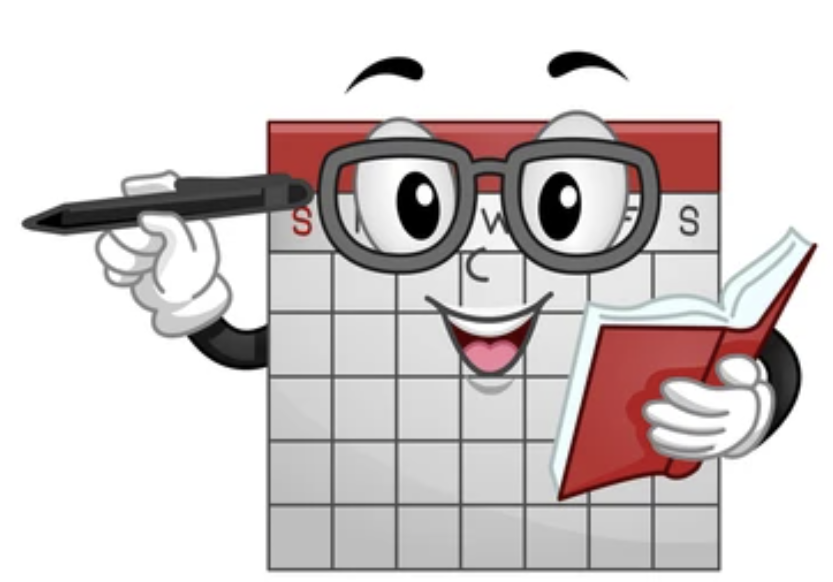

कॅलेंडर – एक हितगूज !
सालाबादप्रमाणे नवीन वर्ष उगवले , जानेवारी महिना उजाडला व घरातील सर्व कॅलेंडर्स बदलून टाकण्याचे काम करणे आले.
भिंतींवरील सर्व जुनी कॅलेंडर्स काढून टाकली आणि त्या जागी नवीन वर्षाची नवीन कॅलेंडर्स विराजमान केली.
हे करत असताना मनात विचारांचे काहूर माजले. या जुन्या, गतवर्षीच्या कॅलेंडरने मला वर्षभर साथ दिली -- आपले सणवार कधी ? वर्षभरातील महत्वाचे दिवस कधी ? आपल्या प्रिय माणसांचे वाढदिवस कधी ? --- एक ना अनेक !! आणि किती गोष्टींच्या नोंदी आपण कॅलेंडरवर करतो -- मुलांच्या शाळा-कॉलेज मधील वेगवेगळे प्रसंग, समारंभ कधी ? कुणाला कधी बोलवायचे ? पुढचे संगीत संमेलन कधी ? -- लिहावे तितके थोडेच !
खरेच -- कॅलेंडरबरोबर हितगुज करत करतच आपण वर्षभर वाटचाल करतो --
आणि -- गरज सरो व वैद्य मरो, या म्हणीप्रमाणे, वर्ष संपले व या कॅलेंडरचा आता उपयोग नाही म्हणून एका क्षणात आपण ते फेकून देतो !!
सगळं कळतंय, वाईटही वाटतंय -- पण हे जुने कॅलेंडर ठेवून तरी काय करणार ? अर्थात आठवण म्हणून आपण ते जतन करू ठेवू शकतो --
पण अशा किती गोष्टी संभाळून ठेवणार ? आणि आता तर कॉम्प्युटरच्या जगात आपण वावरतोय -- एक बटण दाबले हि डोळ्यासमोर सर्व हजर !!
तात्पर्य काय -- जुन ते सोनं असले तरी नव्याला सामोरे जाणे हाच एक मार्ग आहे व त्यातच शहाणपण आहे !
हे सर्वे तात्विक असले तरी --
माझे जुने कॅलेंडर -- क्षमा कर मला ! पण खरं सांगू , मी तुझी साथ नाही सोडत आहे -- मी तुझ्याच पुढच्या वारसदाराचं बोट पकडून पुढच्या वर्षांची वाटचाल करणार आहे ! माझ्या जुन्या कडू-गोड आठवणी विरळ झाल्या तरी पूर्णपणे नाही विसरल्या जाणार !
देवाला वाहिलेल्या फूलांचेही शेवटी निर्माल्यच होते ना !!